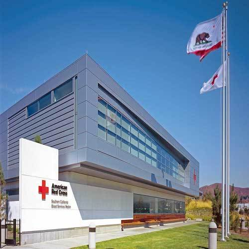

Arianna Cocjin
Hello, my name is Arianna Cocjin! I'm in my senior year as a psychology student here at UC Riverside. I was
formerly a biology student, however, found my true interest is in the inner machinations of human behavhior and interactions
with others. In terms of professional interest, I have always been inclined towards the medical field; as such, I am a
pre-health student with an interest in PA school in the near future.
I have volunteered for various healthcare organizations such as Kaiser Permanente, City of Hope, and the American Red Cross,
where my duties comprised of clinicial and administrative duties. Currently, I am traning to be a COPE Health Scholar,
where I aim to accumulate clincial experience in patient interactions, as well as understanding my role in the health-
care team. My extracurriculars include membership to ActiveMinds, Physician Assistants of Tomororw (PAT), Mini Medical School
(MMS), and the Psi Chi Honors Society. In ActiveMinds and MMS, I'm allowed the opportunity to present on topics such as mental
health awareness and women's health (respectively), two areas of health and wellbeing that I believe to be paramount in one's
overall health.
Experience
Volunteer
• Participates in tabling events providing information about program and applicable resources (e.g. Nooners, Therapy Fluffies)
• Works with peer group leader in designing activities for tabling events
• Provides creative input for designs/logos for organization
Volunteer
• Provided support and companionship to patients in need of assistance
• Helped with office tasks including scanning/copying documents, preparing “kudos” notes for employees and organizing files
• Greeted visitors cheerfully and answered questions to offer quality customer service
Volunteer
• Helped with office tasks including taking messages, delivering mail, and organizing departmental supplies
• Greeted visitors and offered assistance in directions and service
• Adhered to organization procedures and instructions to maintain safety
Volunteer
• Clerical work
• Helped organize and prepare vouchers, coupons, and other promotional materials for donation events/programs
• Maintained clean, neat and operational facilities to serve all program needs
Education
UC Riverside
Portfolio

